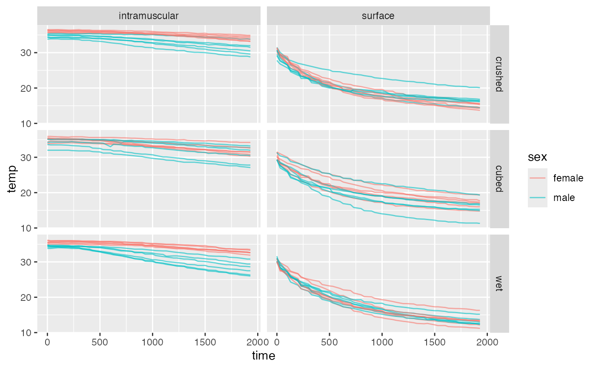

This data set contains the results of an experiment comparing the efficacy of different forms of dry ice application in reducing the temperature of the calf muscle.
Source
Dykstra, J. H., Hill, H. M., Miller, M. G., Michael T. J., Cheatham, C. C., and Baker, R.J., Comparisons of cubed ice, crushed ice, and wetted ice on intramuscular and surface temperature changes, Journal of Athletic Training 44 (2009), no. 2, 136--141.
Details
The 12 subjects in this study came three times, at least four days apart,
and received one of three ice treatments (cubed ice, crushed ice, or ice
mixed with water). In each case, the ice was prepared in a plastic bag and
applied dry to the subjects calf muscle. The temperature measurements were
taken on the skin surface and inside the calf muscle (via a 4 cm long probe)
every 30 seconds for 20 minutes prior to icing, for 20 minutes during icing,
and for 2 hours after the ice had been removed. The temperature
measurements are stored in variables that begin with b (baseline),
t (treatment), or r (recovery) followed by a numerical code
for the elapsed time formed by concatenating the number of minutes and
seconds. For example, R1230 contains the temperatures 12 minutes and
30 seconds after the ice had been removed.
Variables include
Subject identification number
sex a factor with levels
femalemaleweight weight of subject (kg)
Height height of subject (cm)
Skinfold skinfold thickness
calf calf diameter (cm)
Age age of subject
location a factor with levels
intramuscularsurfaceTreatment a factor with levels
crushedcubedwetB0 baseline temperature at time 0
b30 baseline temperature 30 seconds after start
b100 baseline temperature 1 minute after start
b1930 baseline temperature 19 minutes 30 seconds start
t0 treatment temperature at beginning of treatment
t30 treatment temperature 30 seconds after start of treatment
t100 treatment temperature 1 minute after start of treatment
t1930 treatment temperature 19 minutes 30 seconds after start of treatment
R0 recovery temperature at start of recovery
r30 recovery temperature 30 seconds after start of recovery
r100 recovery temperature 1 minute after start of recovery
r12000 recovery temperature 120 minutes after start of recovery
Examples
data(Ice)#> Warning: data set ‘Ice’ not foundgf_point(weight ~ skinfold, color = ~ sex, data = Ice)if (require(readr) && require(tidyr)) { Ice2 <- Ice %>% gather("key", "temp", b0:r12000) %>% separate(key, c("phase", "time"), sep = 1) %>% mutate(time = parse_number(time), subject = as.character(subject)) gf_line( temp ~ time, data = Ice2 %>% filter(phase == "t"), color = ~ sex, group = ~subject, alpha = 0.6) %>% gf_facet_grid( treatment ~ location) }#>#>#> #>#> #> #>